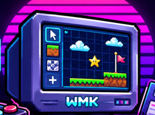

🗺️ Editor de fase 20 × 16
Pronto. Selecione uma ferramenta e desenhe!
🔑 0 · ❤️ 100
Arraste os painéis pelo título e redimensione pela borda inferior direita. Salve vários espaços de trabalho como no Blender.
Os layouts são salvos neste navegador (localStorage). Use Exportar para fazer backup ou trocar de computador. O mapa é salvo separadamente.
WMK Retro FPS · ❤️ 100 | 🔑 Azul: 0 · Ouro: 0 | 🔫 30